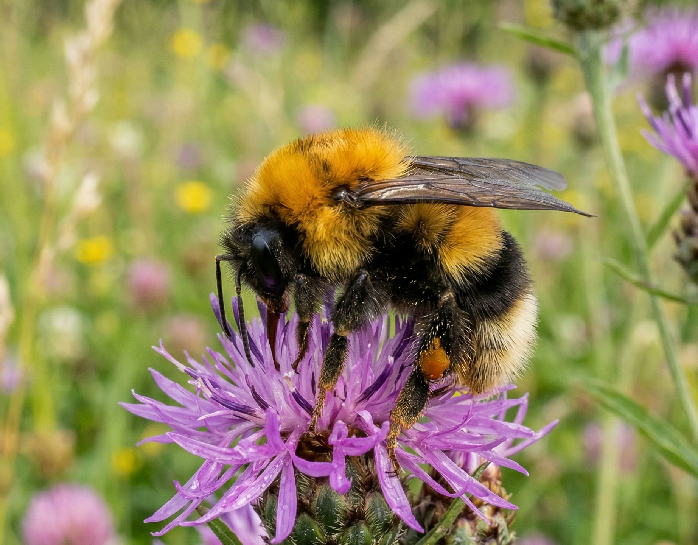
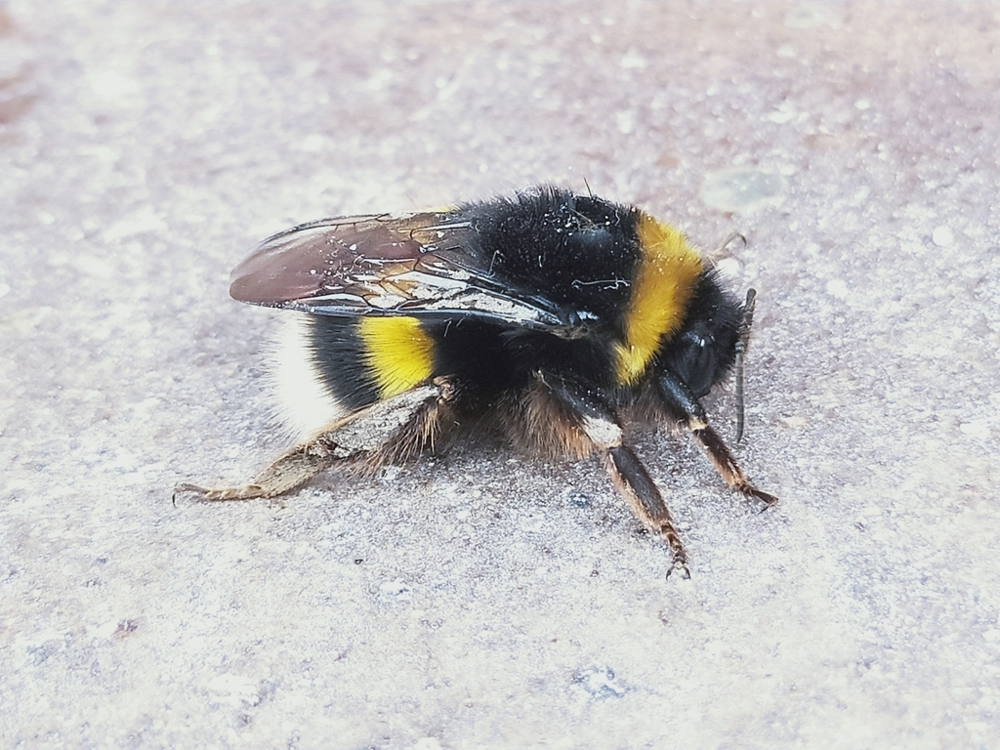
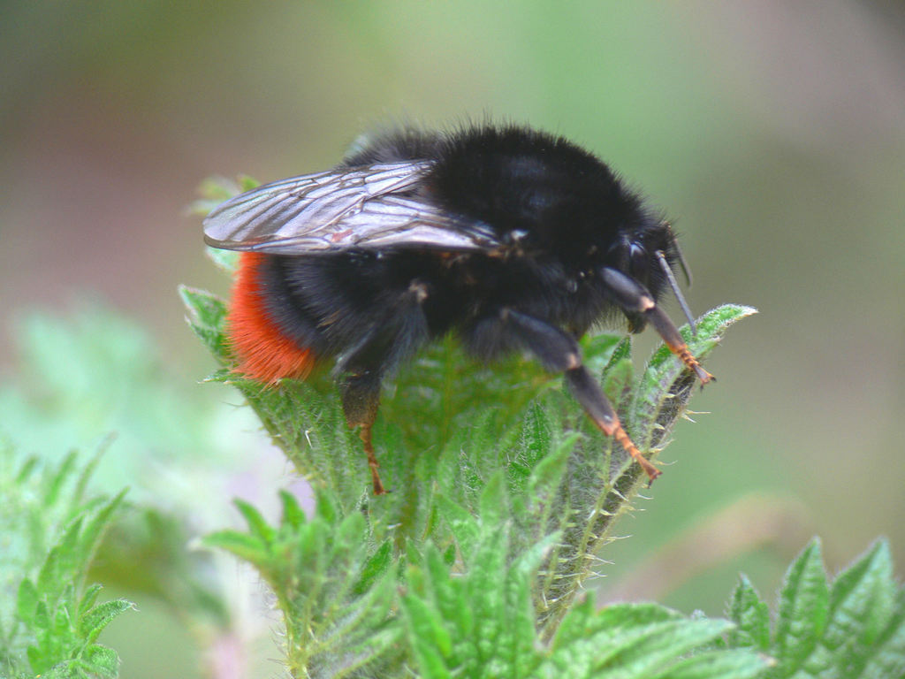
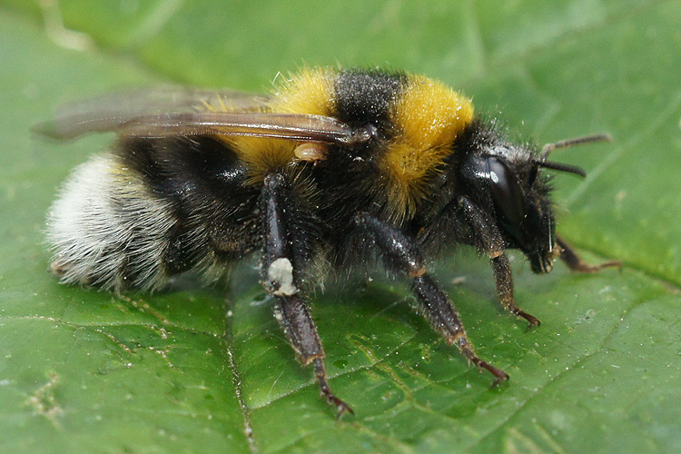

най-често срещаните в градски условия – България
теренен Магазин
🟢 Всеки вид е на отделен ред – преглеждайте един по един.
Кликнете върху снимката за увеличен изглед (lightbox). Сравнявайте цветовете по кръгчетата (отпред назад).
Обикновена земна пчела
Bombus terrestris

градини, паркове, тревни площи
Размери: царица 20–25 mm, workers 11–17 mm
Активност: март – октомври
Разпознаване
черно тяло с две жълти ивици – преден гръб и втората половина на корема
опашката белезникава до светлобежова
гнезди под земята
отпред назад
при работничките ивиците може да са по-слаби
Светлоопашата земна пчела
Bombus lucorum

паркове, храсталаци, градини
Размери: царица 18–22 mm, workers 10–16 mm
Активност: април – септември
Разпознаване
почти идентичен с B. terrestris, но опашката е чисто бяла
жълтите ивици по-ярки, лимоненожълти
последователност
сигурно различаване с лупа
Червеноопашата земна пчела
Bombus lapidarius

каменни зидове, стари сгради, цветни градини
Размери: царица 20–22 mm, workers 11–16 mm
Активност: април – септември
Разпознаване
тялото изцяло черно (кадифено)
ярко червено-оранжева опашка (последните 2-3 сегмента)
черно + червено
много лесен за разпознаване!
Градинска земна пчела
Bombus hortorum

градини, паркове, овощни градини
Размери: царица 18–22 mm, workers 11–16 mm
Активност: март – септември
Разпознаване
дълго лице (издължена глава)
три жълти ивици: гръб, първи коремен, трети коремен